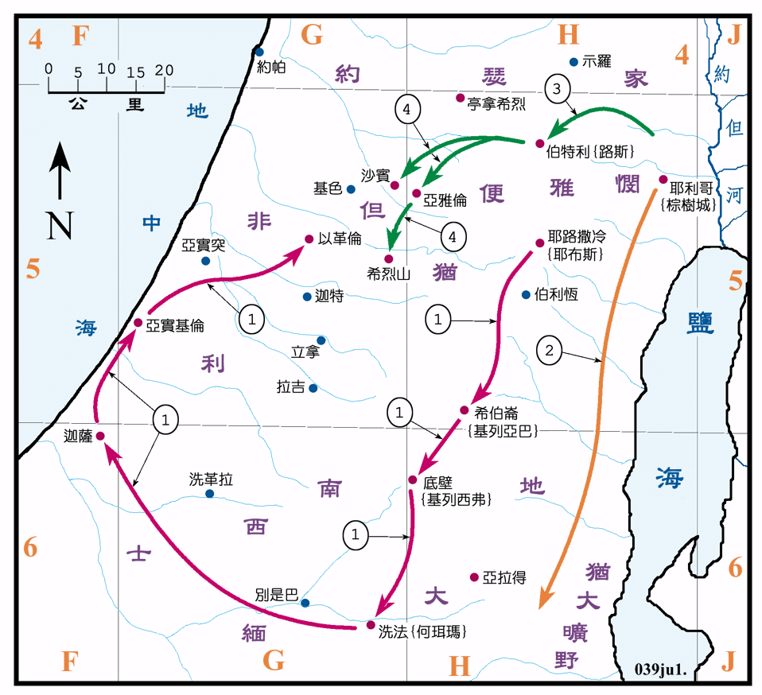

行动线说明
| 序号 | 圣经 | 说明 |
|---|---|---|
| 士1:1，2:8-9 | 约书亚活到一百一十岁，约是在1390BC 去世，葬在亭拿希烈。 | |
| 1 | 士1:1-26 | 犹大、西缅和以法莲攻取南部之地，包括有耶路撒冷、希伯仑、底壁、洗法、迦萨、亚实基伦、以革伦等地。 |
| 2 | 士1:16 | 基尼人离开棕树城，往亚拉得以南的犹大旷野去住在那里。 |
| 3 | 士1:22-26 | 约瑟家攻取了伯特利。 |
| 4 | 士1:35 | 约瑟家攻取了希烈山、亚雅伦和沙宾。 |
士师记是记载约书亚至撒母耳之间的历史，大约是从1400BC 到1100BC 年间的事，各士师之年代，经考据分别记载在各图之说明中。
约书亚虽然带领以色列人征服迦南地，但并未消灭所有的迦南人，不久迦南人又强大了起来，新一代的以色列人必须再去征服失去之地。
本段中只记载了犹大、西缅、便雅悯和约瑟家 (即是以法莲和玛拿西) 等五个支派的战事，他们收复了伯特利以南的地区。但是并未能赶出耶路撒冷的耶布斯人。犹大攻取了非利士人的三个主要城镇，但照第十九节的说法，似乎并没有能长久的占领。